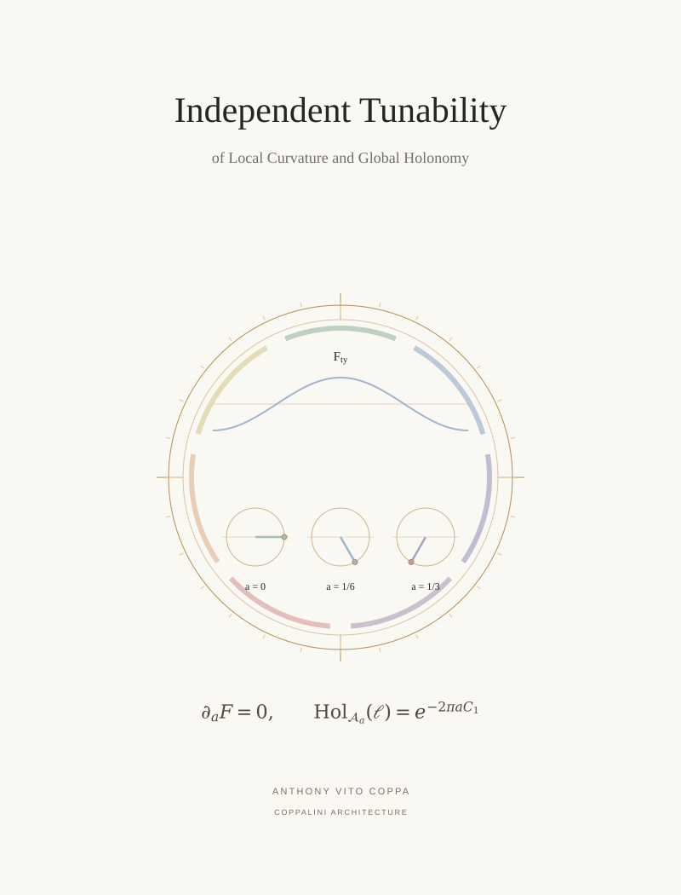

T 01 / Standalone construction / COVER ARTWORK
Independent Tunability of Local Curvature and Global Holonomy


One fixed curvature profile accompanies three independently selected loop phases.
T 01 / Standalone construction / COVER ARTWORK

One fixed curvature profile accompanies three independently selected loop phases.